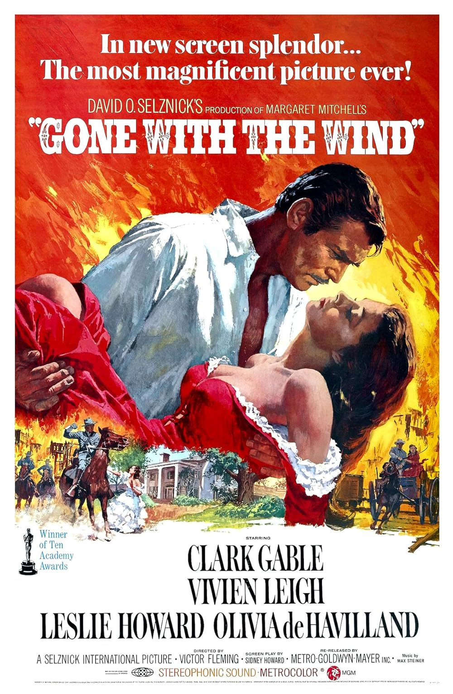

Gone with the Wind
12th Academy Awards
(Oscars 1940)
13 Nominations*, 9 Awards*
| Nominations | ||
|---|---|---|
| Category | Nominees | Result |
| Outstanding Production | Selznick International Pictures | Won |
| Actor | Clark Gable | Nominated |
| Actress | Vivien Leigh | Won |
| Actress in a Supporting Role | Hattie McDaniel | Won |
| Actress in a Supporting Role | Olivia de Havilland | Nominated |
| Directing | Victor Fleming | Won |
| Writing (Screenplay) | Sidney Howard | Won |
| Cinematography (Color) | Ernest Haller and Ray Rennahan | Won |
| Film Editing | Hal C. Kern and James E. Newcom | Won |
| Art Direction | Lyle Wheeler | Won |
| Special Effects | Arthur Johns, Fred Albin, and John R. Cosgrove | Nominated |
| Sound Recording | Thomas T. Moulton | Nominated |
| Music (Original Score) | Max Steiner | Nominated |
| Special Award | Gone with the Wind | Won |